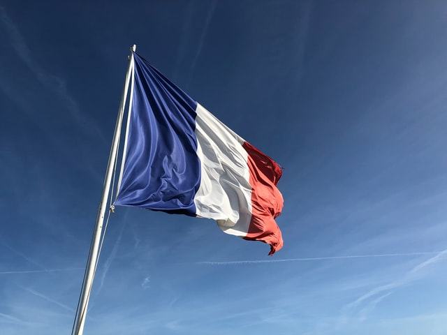

คำยืมจากภาษาฝรั่งเศส

ภาษาฝรั่งเศสเป็นภาษาตะวันตกที่มีความผูกพันทางประวัติศาสตร์กับประเทศไทยมาอย่างยาวนาน โดยปรากฏหลักฐานเด่นชัดตั้งแต่สมัยกรุงศรีอยุธยาในรัชสมัยของสมเด็จพระนารายณ์มหาราช ผ่านการเจริญสัมพันธไมตรีทางการทูต และได้เข้ามามีบทบาทอีกครั้งในยุคการล่าอาณานิคมและการเปิดรับอารยธรรมตะวันตกในสมัยรัตนโกสินทร์ คำยืมภาษาฝรั่งเศสในภาษาไทยส่วนใหญ่มักเป็นคำศัพท์ที่เกี่ยวข้องกับวงการแฟชั่น ศิลปะ การทำอาหารชั้นสูง และศัพท์เฉพาะทางในระบบราชการหรือการทูต แม้ว่าบางคำจะส่งผ่านต่อมาจากภาษาอังกฤษอีกทอดหนึ่ง แต่คนไทยก็ยังคงรักษาการออกเสียงท้ายพยางค์ที่นุ่มนวลอันเป็นเอกลักษณ์ของภาษาฝรั่งเศสไว้ เช่น คำว่า ครัวซองต์ และ บุฟเฟต์ ในหมวดอาหาร หรือคำว่า คาเฟ่ บูติก และ ปาร์เกต์ ที่ใช้ในชีวิตประจำวัน นอกจากนี้ยังมีคำศัพท์ชั้นสูงที่ใช้ในวงสังคมและการแข่งขัน เช่น กรังด์ปรีซ์ และ กัปตัน การคงอยู่ของคำยืมภาษาฝรั่งเศสในภาษาไทยจึงเป็นเครื่องสะท้อนถึงรสนิยม ความวิเศษวิโส และประวัติศาสตร์การผสมผสานทางวัฒนธรรมระหว่างตะวันออกและตะวันตกได้อย่างงดงาม